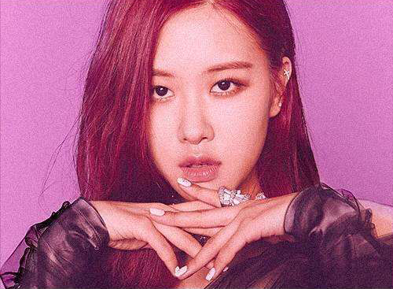

Roseanne Park (born 11 February 1997), better known by the mononym Rosé
(Korean: 로제), is a New Zealand singer currently based in South Korea. Rosé signed
with South Korean label YG Entertainment following an audition in 2012, training there
for four years. She eventually made her debut as the main vocalist in the girl group
Blackpink in August 2016. As a solo artist, she has featured in labelmate G-Dragon's
2012 track "Without You", which peaked at number ten on the Gaon Music Chart.
